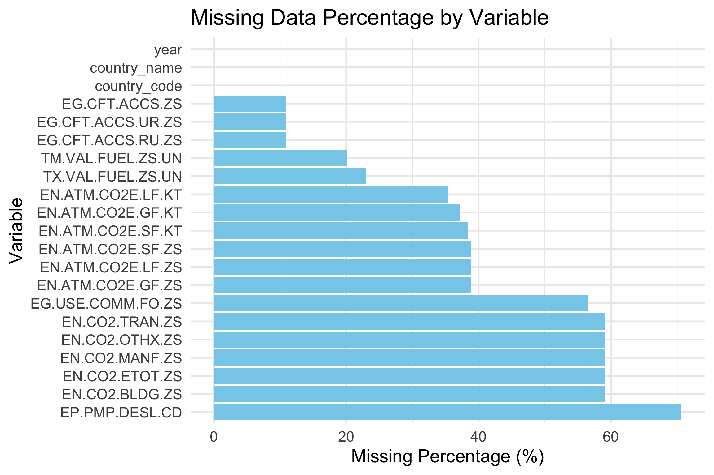
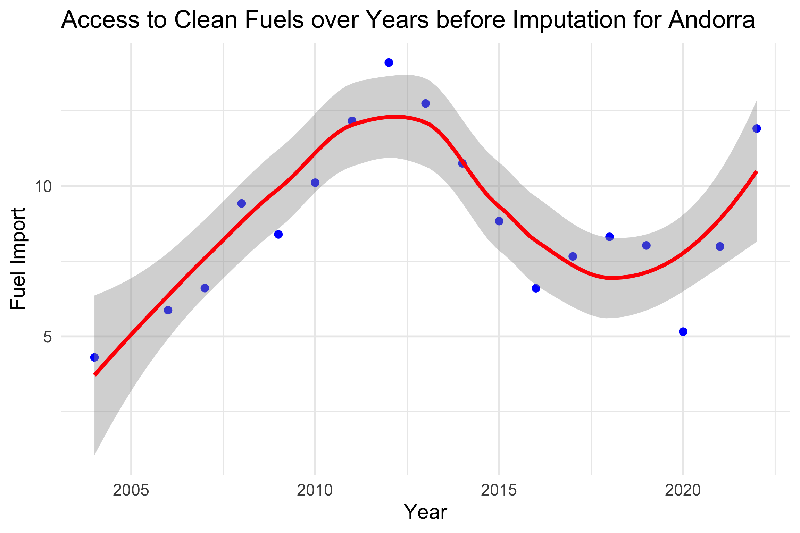
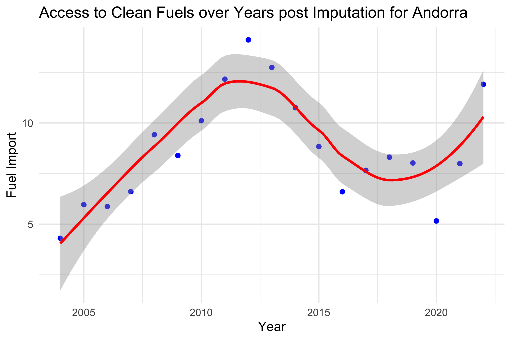
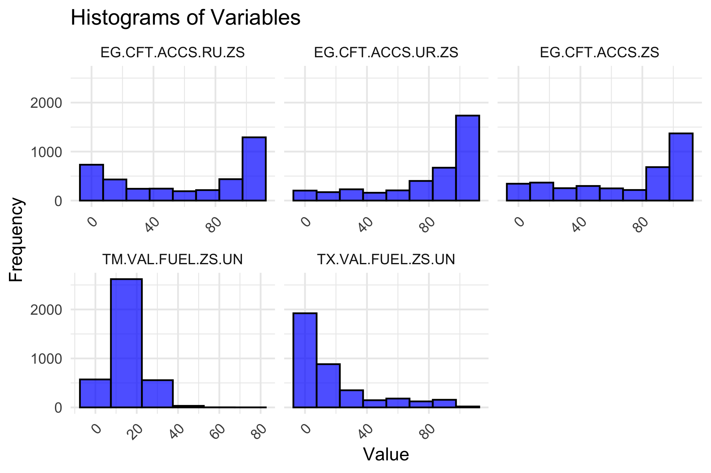

ETC5521 Diving Deeper into Data Exploration: Olymic Data
Exploration
Author
Pooja Rajendran Raju
Published
August 5, 2024
Exploration of Olympic Medal Data
Becoming Tukey
a. Top 10 Countries by Gold Medal Count
Code
# Web scraping the wikipedia medal tally page wiki_link <-"https://en.wikipedia.org/wiki/2024_Summer_Olympics_medal_table"wiki_page <-read_html(wiki_link)#Reading all tables in the pagetables <-html_nodes(wiki_page, "table")#Selecting the olympic medal table medal_table <- tables[[4]]#Converting to dataframe medal_tally <-html_table(medal_table, fill =TRUE)#Cleaning the data scrappedmedal_tally <- medal_tally |>mutate(NOC =str_replace_all(NOC, "\\*|[‡]", ""))top_10 <- medal_tally |>select(Rank, NOC, Gold) |>head(10)kable(top_10, caption ="Top 10 Countries by Gold Medal Count") |>kable_styling(bootstrap_options =c("striped", "hover"))
Top 10 Countries by Gold Medal Count
Rank
NOC
Gold
1
United States
40
2
China
40
3
Japan
20
4
Australia
18
5
France
16
6
Netherlands
15
7
Great Britain
14
8
South Korea
13
9
Italy
12
10
Germany
12
b. Top 10 Countires Based on Gold Medals Per Capita
Code
population <-read_csv("data/population-and-demography.csv")
Code
#Cleaning the population data population <- population |>filter(Year =="2023") |>drop_na()
Code
# Generating the country codes for medal data # Manually set code for Kosovo based on code present in population data as it was not generating using 'countrycode' packagemedal_tally <- medal_tally |>mutate(Code =case_when( NOC =="Kosovo"~"OWID_KOS", TRUE~countrycode(NOC, origin ="country.name", destination ="iso3c") ))
Code
options(scipen =999)# Coming the medal tally and population data combined_data <-left_join(medal_tally, population, by ="Code")# Cleaning combined data and converting population into millionscombined_data <- combined_data |>select(NOC, Gold, Silver, Bronze, Total, `Population - Sex: all - Age: all - Variant: estimates`) |>mutate(`Population (Millions)`=`Population - Sex: all - Age: all - Variant: estimates`/1000000) |>select(-`Population - Sex: all - Age: all - Variant: estimates`)# Calculating medals per capitacombined_data_top <- combined_data |>mutate(Medals_Per_Capita = Gold /`Population (Millions)`) |>arrange(desc(Medals_Per_Capita)) |>mutate(Rank =row_number()) |>head(10)kable(combined_data_top, caption ="Top 10 Countries Based on Gold Medals Per Capita") |>kable_styling(bootstrap_options =c("striped", "hover"))
Top 10 Countries Based on Gold Medals Per Capita
NOC
Gold
Silver
Bronze
Total
Population (Millions)
Medals_Per_Capita
Rank
Dominica
1
0
0
1
0.07
15.03
1
Saint Lucia
1
1
0
2
0.18
5.58
2
New Zealand
10
7
3
20
5.17
1.93
3
Bahrain
2
1
1
4
1.57
1.27
4
Slovenia
2
1
0
3
2.12
0.94
5
Netherlands
15
7
12
34
18.09
0.83
6
Georgia
3
3
1
7
3.81
0.79
7
Ireland
4
0
3
7
5.20
0.77
8
Norway
4
1
3
8
5.52
0.72
9
Australia
18
19
16
53
26.45
0.68
10
c. Five New Ways of Ranking the Olympic Countries
Code
# Web scraping the wikipedia page to get count of participants from each country participant_link <-"https://simple.wikipedia.org/wiki/2024_Summer_Olympics#Competing_nations"wiki_part <-read_html(participant_link)tables_part <-html_nodes(wiki_part, "table")#Selecting the participant count table participant_table <- tables_part[[5]]#Converting to dataframe participant_tally <-html_table(participant_table, fill =TRUE)#Cleaning the scrapped data participant_tally <- participant_tally |>mutate(Country =str_replace_all(Country, "\\*|[‡]", ""))
Code
#Joining the participant tally with existing datajoin_part <-left_join(combined_data, participant_tally,by =c("NOC"="Country")) |>select(-Ranking)
Code
# Reading the GPD per capita data gdp_per_capita <-read_csv("data/gdp-per-capita-worldbank.csv")
Code
gdp_per_capita <- gdp_per_capita |>filter(Year =="2022") |>rename(`GDP_Per_Capita ($)`=`GDP per capita, PPP (constant 2017 international $)`)
Code
#Combining the GDP data other olymic datafull_data <-left_join(join_part, gdp_per_capita,by =c("NOC"="Entity")) |>select(-Code, -Year)
Method 1: Medals Per Total Athletes
Code
method_1 <- full_data |>mutate(medal_efficiency =as.numeric(Total) / Athletes) |>arrange(desc(medal_efficiency)) |>select(-`Population (Millions)`, -`GDP_Per_Capita ($)`) |>head(5)# Top countries by Medal Efficiency Indexkable(method_1, caption ="Top 5 Countires Based on Medals Per Total Athletes") |>kable_styling(bootstrap_options =c("striped", "hover"))
Top 5 Countires Based on Medals Per Total Athletes
NOC
Gold
Silver
Bronze
Total
Athletes
medal_efficiency
Saint Lucia
1
1
0
2
4
0.50
Kyrgyzstan
0
2
4
6
16
0.38
North Korea
0
2
4
6
16
0.38
Grenada
0
0
2
2
6
0.33
Iran
3
6
3
12
40
0.30
This metric evaluates how effectively countries convert the number of athletes they send to the Olympics into actual medals won. It measures the success of a nation by comparing the number of medals (gold, silver, and bronze) achieved relative to the total number of athletes they have participating. A higher value in this index indicates that a country is more successful at converting its athletic representation into medals, reflecting greater efficiency in their Olympic performance. This method highlights how well countries manage to achieve medal success with the athletes they send, emphasizing performance efficiency.
Method 2: Total Medals Per Capita
Code
method_2 <- full_data |>mutate(population_adjusted_medals =as.numeric(Total) /`Population (Millions)`) |>arrange(desc(population_adjusted_medals)) |>select(-Athletes, -`GDP_Per_Capita ($)`) |>head(5)# Top 5 countries by medals relative to populationkable(method_2, caption ="Top 5 Countires Based on Total Medals Per Capita") |>kable_styling(bootstrap_options =c("striped", "hover"))
Top 5 Countires Based on Total Medals Per Capita
NOC
Gold
Silver
Bronze
Total
Population (Millions)
population_adjusted_medals
Grenada
0
0
2
2
0.12
17.1
Dominica
1
0
0
1
0.07
15.0
Saint Lucia
1
1
0
2
0.18
11.2
New Zealand
10
7
3
20
5.17
3.9
Bahrain
2
1
1
4
1.57
2.5
This metric normalizes the total count of medals won (gold, silver, and bronze) by factoring in the population size of each country. It calculates the total number of medals per population (millions), allowing for a comparison that adjusts for the size of the population. This approach offers a per capita assessment of Olympic success, providing a more equitable measure of performance between countries of varying sizes, rather than focusing only on the count of gold medals or gold medals per capita.
Method 3: Medals per unit of GDP Per Capita
Code
method_3 <- full_data |>mutate(medals_per_gdp_unit = (as.numeric(Total) /`GDP_Per_Capita ($)`) *100) |>arrange(desc(medals_per_gdp_unit)) |>select(-Athletes, -`Population (Millions)`) |>head(5)# Top 5 countries by medals relative to GDP per capitakable(method_3, caption ="Top 5 Countires Based on Medals per unit of GDP Per Capita") |>kable_styling(bootstrap_options =c("striped", "hover"))
Top 5 Countires Based on Medals per unit of GDP Per Capita
NOC
Gold
Silver
Bronze
Total
GDP_Per_Capita ($)
medals_per_gdp_unit
China
40
27
24
91
18188
0.50
Kenya
4
2
5
11
4882
0.23
United States
40
44
42
126
64623
0.19
Ethiopia
1
3
0
4
2381
0.17
Uzbekistan
8
2
3
13
8073
0.16
This metric evaluates how efficiently countries convert their economic resources, measured as GDP per capita, into Olympic medals. By determining the number of medals achieved per unit of GDP per capita and expressing this as a percentage, it sheds light on how effectively a country uses its financial means to succeed in the Olympics. A higher percentage indicates a greater ability to convert economic investment into athletic success. This approach provides insight into how well countries of different economic standings perform, highlighting the effectiveness of their economic resources in securing medals.
Method 4: Weighted Medal Count Per Athletes
Code
method_4 <- full_data |>mutate(weighted_medal_count = (Gold *3+ Silver *2+ Bronze *1) / Athletes)|>arrange(desc(weighted_medal_count)) |>select(-`GDP_Per_Capita ($)`, -`Population (Millions)`) |>head(5)# Top 5 countries by Weighted Medal Count Per athleteskable(method_4, caption ="Top 5 Countires Based on Weighted Medal Count Per Athletes") |>kable_styling(bootstrap_options =c("striped", "hover"))
Top 5 Countires Based on Weighted Medal Count Per Athletes
NOC
Gold
Silver
Bronze
Total
Athletes
weighted_medal_count
Saint Lucia
1
1
0
2
4
1.25
Dominica
1
0
0
1
4
0.75
Iran
3
6
3
12
40
0.60
Georgia
3
3
1
7
28
0.57
China
40
27
24
91
388
0.51
This method assigns different weights to each type of medal, with gold receiving a weight of 3, silver a weight of 2, and bronze a weight of 1. These weights reflect the varying prestige of each medal, acknowledging that gold medals are more significant than silver or bronze. The weighted total is then divided by the number of athletes from each country, providing a measure of how effectively a nation converts its athlete participation into high-value medal achievements. A higher score indicates that a country not only wins medals but does so by prioritizing the most prestigious ones, offering a more nuanced view of Olympic success that factors in both medal quality and athlete efficiency.
Method 5: Weighted Medals per GDP and Athletes
Code
method_5 <- full_data |>mutate(medal_value_index = ((Gold *3+ Silver *2+Bronze *1) / (`GDP_Per_Capita ($)`* Athletes)) *100) |>arrange(desc(medal_value_index)) |>select(-`Population (Millions)`) |>head(5)# Top 5 countries by Weighted Medal Count Per per GDP and Athleteskable(method_5, digits =c(0, 0, 0, 0,0,0,0, 5), caption ="Top 5 Countires Based on Weighted Medals per GDP and Athletes") |>kable_styling(bootstrap_options =c("striped", "hover"))
Top 5 Countires Based on Weighted Medals per GDP and Athletes
NOC
Gold
Silver
Bronze
Total
Athletes
GDP_Per_Capita ($)
medal_value_index
Ethiopia
1
3
0
4
34
2381
0.0111
Kyrgyzstan
0
2
4
6
16
5070
0.0099
Uganda
1
1
0
2
24
2280
0.0091
Saint Lucia
1
1
0
2
4
15100
0.0083
Pakistan
1
0
0
1
7
5377
0.0080
The Medal Value Index assesses how effectively a country turns its economic resources and athletes into Olympic medals. It weights medals (3 points for gold, 2 for silver, and 1 for bronze), and divides the total by GDP per capita and the number of athletes. This provides insight into a nation’s efficiency in converting resources into medals. A higher percentage suggests that a country excels at winning medals with fewer resources or athletes, while a lower percentage highlights higher resource requirements for the same achievement.
Chatfield-style IDA
Code
# Reading the original data fuel_data <-read_csv("data/world_indicators_data_original.csv", na ="..", n_max =11935)
The population of interest in this context would be all households or individuals in a given region or country that rely on various types of fuels for cooking. This could be within a specific country, region, or globally, depending on the scope of the analysis.
Data Screening
Evaluating Data Type Composition
Code
vis_dat(fuel_data)
Checking the dataset using ‘vis_dat’ to understand the data type composition of the dataset. Here, the dataset is mainly composed of character type variables, numeric variables and NA’s.
Evaluating Structure of Data
Code
# Note: output is hidden in the report because of high number of variablesglimpse(fuel_data)
Using to ‘glimpse’ function shows each variable’s name, data type, and a few of the first values, allowing for a quick assessment of the dataset’s structure and content, helping to verify data types and quickly understand the data.
Creating a Continent and Region Summary
Code
#Creating clean variable names and generating regions and continent for each countrycountry_code_df <- fuel_data |>distinct(`Country Name`, `Country Code`) |>rename_all(janitor::make_clean_names) |>left_join( countrycode::codelist |>select(iso3c, region, continent),by =c("country_code"="iso3c")) |>arrange(continent, region) # Creating the continent wise summarycontinent_summary <- country_code_df |>group_by(continent) |>summarise(n =n())kable(continent_summary, caption ="Continent Summary") |>kable_styling(bootstrap_options =c("striped", "hover"))
Continent Summary
continent
n
Africa
54
Americas
46
Asia
50
Europe
46
Oceania
19
NA
54
Code
# Creating the region wise summaryregion_summary <- country_code_df |>group_by(region) |>summarise(n =n())kable(region_summary, caption ="Region Summary") |>kable_styling(bootstrap_options =c("striped", "hover"))
Region Summary
region
n
East Asia & Pacific
37
Europe & Central Asia
56
Latin America & Caribbean
42
Middle East & North Africa
21
North America
3
South Asia
8
Sub-Saharan Africa
48
NA
54
Creating a continent and region summary during the data screening phase of Initial Data Analysis (IDA) is valuable because it helps in understanding the geographic distribution of the data, spotting potential errors or anomalies linked to specific regions, and ensuring that the dataset is well-structured before further analysis. It can also guide decisions on whether certain regions or continents require different handling or if there are missing or incomplete data that need attention.
Data Cleaning
Code
# Creating a new variable to store the series name and series codewdi_vars <- fuel_data |>select(`Series Name`, `Series Code`) |>distinct() |>rename_all(janitor::make_clean_names) write.csv(wdi_vars, "data/valid_fuel_variables.csv", row.names =FALSE)
Code
# Converting the data to tidy form and using janitor to make clean variable namesfuel_tidy <- fuel_data |>select(`Country Name`, `Country Code`, `Series Code`, `2004 [YR2004]`:`2022 [YR2022]`) |>rename_all(janitor::make_clean_names) |>pivot_longer(x2004_yr2004:x2022_yr2022,names_to ="year", values_to ="value") |>mutate(year =as.numeric(str_sub(year, 2, 5)) ) #Removing empty strings fuel_tidy <- fuel_tidy[fuel_tidy$series_code !="", ]fuel_tidy <- fuel_tidy |>pivot_wider(names_from = series_code,values_from = value)
In the above code, we are making clean names for variables using the janitor package. We are further converting the time series variables from wide to long format and then converting the series code column into variables using pivot_wider. Doing this ensures that the data is in tidy form and easier to use and manipulate.
Checking the Missing Value Percentage for Each Variable
Code
# Calculating the missing percentage for each variablemissing_summary <- fuel_tidy |>summarise(across(everything(), ~sum(is.na(.)) /n() *100)) |>pivot_longer(cols =everything(),names_to ="variable", values_to ="missing_percentage") #Plotting the missing percentage for each variableggplot(missing_summary, aes(x =reorder(variable,-missing_percentage), y = missing_percentage)) +geom_bar(stat ="identity", fill ="skyblue") +coord_flip() +labs(title ="Missing Data Percentage by Variable",x ="Variable",y ="Missing Percentage (%)") +theme_minimal()

Understanding the missing values percentage for each variable helps to decide if to keep the variable or not. Here, we can observe that all variables related to CO2 emissions and fossil fuel consumption have a high % (> 30%) of missing values. While, the last variable related to Diesel Pump price has the highest at just over 70% missing values.
Before removing the variables based on missing percentage, lets check the importance or relevance of the variable to the research question.
Is access to clean fuels for cooking related to fuel imports or exports?
Based on evaluation, the primary variables of interest are:
EG.CFT.ACCS.ZS: Access to clean fuels and technologies for cooking (% of population)
EG.CFT.ACCS.RU.ZS: Access to clean fuels and technologies for cooking, rural (% of rural population)
EG.CFT.ACCS.UR.ZS: Access to clean fuels and technologies for cooking, urban (% of urban population)
TX.VAL.FUEL.ZS.UN: Fuel exports (% of merchandise exports)
TM.VAL.FUEL.ZS.UN: Fuel imports (% of merchandise imports)
Variables not of interest to our research question:
Variables related to CO2 emissions CO2 emissions variables assess the environmental impact of fuel use by focusing on carbon emissions rather than on clean fuel access or fuel trade. Given that the research question is concerned with the relationship between access to clean fuels and fuel imports or exports, these emissions variables are not directly pertinent. These variables include: “EN.CO2.ETOT.ZS”, “EN.ATM.CO2E.GF.ZS”, “EN.ATM.CO2E.GF.KT”, “EN.ATM.CO2E.LF.ZS”, “EN.ATM.CO2E.LF.KT”, “EN.CO2.MANF.ZS”, “EN.CO2.OTHX.ZS”, “EN.CO2.BLDG.ZS”, “EN.ATM.CO2E.SF.ZS”, “EN.ATM.CO2E.SF.KT”, “EN.CO2.TRAN.ZS”.
Fossil Fuel Energy Consumption Variable The Fossil Fuel Energy Consumption variable captures the usage of non-clean energy sources, representing the overall energy mix rather than directly addressing clean fuel access or trade. Although it may indirectly influence the availability or advancement of clean fuels, it does not directly measure access to clean fuels or a country’s fuel imports and exports. The variable name is “EG.USE.COMM.FO.ZS”.
Pump price for diesel fuel variable The Pump Price for Diesel Fuel is tied to market conditions and economic factors, rather than being directly linked to the availability of clean cooking fuels or fuel trade. Although it can affect overall energy costs, it doesn’t offer specific insights into clean fuel access or the connection between fuel imports and exports. The variable name is “EP.PMP.DESL.CD”
Considering the variables missing values percentages and the variables of primary interest the new dataset is as follows:
Calcuting the Missing Value Percentage for Each Country
Code
# Calculating the average missing percentage across all variables for each countrymissing_percentage_per_country <- rev_fuel |>group_by(country_code) |>select(-year) |>summarise(across(where(is.numeric), ~sum(is.na(.)) /n() *100, .names ="missing_{col}")) |>rowwise() |>mutate(total_missing_percentage =mean(c_across(starts_with("missing_")), na.rm =TRUE) ) |>select(country_code, total_missing_percentage)# Filtering out the countries with more then 70% missing datahigh_missing_countries <- missing_percentage_per_country |>filter(total_missing_percentage >70)
Code
# Plotting the resultsggplot(high_missing_countries, aes(x =reorder(country_code, total_missing_percentage), y = total_missing_percentage)) +geom_segment(aes(xend = country_code, yend =0), color ="blue") +geom_point(size =2, color ="black") +coord_flip() +labs(title ="Countries with Total Missing Percentage Greater Than 70%",x ="Country",y ="Total Missing Percentage" ) +theme_minimal()
Based on the above missing value percentages, removing countries with more than 70 % average missing percentage across all variables as they have very less data.
Code
#filtering out countries with high missing values filtered_fuel <- rev_fuel |>filter(!country_code %in% high_missing_countries$country_code)
From further observation, when considering imputation given the risk of introducing bias or reducing the accuracy of the imputed values. Removing the countries where the access to fuel variables have data missing completely or the variable related to export/import have more than 50% missing data.
# Final dataset post removing the countries with significant missing values fuel_valid <- filtered_fuel |>filter(country_code %in% final_filter$country_code)
The outliers observed in TX.VAL.FUEL.ZS.UN, TM.VAL.FUEL.ZS.UN, EG.CFT.ACCS.UR.ZS that is related to fuel exports, fuel imports and Access to clean fuels and technologies for cooking, urban respectively.
Outliers may reflect countries with distinct economic conditions, such as those heavily reliant on fuel imports or exports, or those with substantial investments in clean energy technologies. Additionally, unique characteristics like being oil-rich or having strong clean energy policies can also result in outlier values. These would provide additional perspective while doing further analysis and best to retain them.
Imputation
Checking for missing values in variables post data cleaning
Code
# Checking for missing values colSums(is.na(fuel_valid))
Based on the review of missing values, we can observe that TX.VAL.FUEL.ZS.UN, TM.VAL.FUEL.ZS.UN variables have missing values. Now we will consider imputation for these two variables.
Imputation using Moving Averages Method
Checking the method by applying it to a country with relatively full data: “Andorra - AND” for the variable “TM.VAL.FUEL.ZS.UN”
Code
#Plotting the data before imputationcountry_data <- fuel_valid |>filter(country_code =="AND")ggplot(country_data, aes(x = year, y = TM.VAL.FUEL.ZS.UN)) +geom_point(color ="blue") +geom_smooth(method ="loess", color ="red") +labs(title ="Access to Clean Fuels over Years before Imputation for Andorra",x ="Year",y ="Fuel Import") +theme_minimal()

#Applying Imputationimpute_data <- country_data |>mutate(across(starts_with("TM"), ~na_ma(.x, k =5)))
Code
#Plotting the data post imputationggplot(impute_data, aes(x = year, y = TM.VAL.FUEL.ZS.UN)) +geom_point(color ="blue") +geom_smooth(method ="loess", color ="red") +labs(title ="Access to Clean Fuels over Years post Imputation for Andorra",x ="Year",y ="Fuel Import") +theme_minimal()

The imputed data point at year 2005 is close to the smoothing line, suggesting that the imputed value aligns well with the general trend or pattern observed in the existing data. Being close to the smoothing line can indicate that the imputation method used (such as moving average) has produced a reasonable estimate that is in line with the overall data distribution. It suggests that the imputation method effectively captures the underlying data pattern and that the imputed values are not drastically different from what is expected.
Hence applying this method to further impute the remaining values.
valid_fuel_data <- fuel_valid |>group_by(country_code) |>mutate(across(starts_with("T"), ~na_ma(.x, k =5)))
Evaluating the summary of valid_fuel_data post imputation
Code
summary(valid_fuel_data)
country_name country_code year
Length:3781 Length:3781 Min. :2004
Class :character Class :character 1st Qu.:2008
Mode :character Mode :character Median :2013
Mean :2013
3rd Qu.:2018
Max. :2022
EG.CFT.ACCS.ZS EG.CFT.ACCS.RU.ZS EG.CFT.ACCS.UR.ZS
Min. : 0.1 Min. : 0.0 Min. : 0.2
1st Qu.: 36.5 1st Qu.: 13.2 1st Qu.: 65.5
Median : 86.9 Median : 71.7 Median : 95.2
Mean : 68.1 Mean : 58.8 Mean : 78.0
3rd Qu.:100.0 3rd Qu.:100.0 3rd Qu.:100.0
Max. :100.0 Max. :100.0 Max. :100.0
TX.VAL.FUEL.ZS.UN TM.VAL.FUEL.ZS.UN
Min. : 0.00 Min. : 0.0105
1st Qu.: 1.37 1st Qu.:10.1302
Median : 7.22 Median :14.5438
Mean :18.17 Mean :15.1598
3rd Qu.:23.69 3rd Qu.:19.2336
Max. :98.40 Max. :67.7769
Based on the summary, we can observe that post imputing there are no “NA” values in the data and the imputed values are within the expected range.
Reason for Applying Moving Averages Method using ImputeTS
For time-series data with percentage values, the moving average method is generally better as it accounts for temporal patterns and trends in the data, which is important for maintaining the integrity of time-series analysis. It is also good for handling non-normal distributions effectively.
Further k = 5 is chosen as a 5-period moving average smooths out fluctuations by averaging data over 5 time points. It is good for capturing short-term trends and smoothing out noise in the data.
Outline of the IDA conducted
1. Understanding the Population of Interest
The population of interest includes households or individuals in various regions or countries that rely on different types of fuels for cooking. The scope can vary from specific regions to global analyses, depending on the scope of the analysis.
2. Data Screening
Visualizing Data Types and Structure:
“vis_dat(fuel_data)” is used to understand the data composition, revealing a mix of character and numeric variables, along with NA values.
glimpse(fuel_data) provides a quick overview of the dataset, showing variable names, types, and initial values, ensuring the correct data structure.
Geographical Distribution Summary:
Continent and Region Summaries: The dataset is processed to include clean variable names and geographic details for each country (continent and region). Continent and region summaries are created to understand geographic distribution, aiding in spotting potential data issues or anomalies.
3. Data Cleaning
Preparing the Data:
The dataset is cleaned by creating new variables and converting it from wide to tidy format using pivot_longer and pivot_wider. This transformation makes the dataset easier to manipulate and analyze.
Assessing Missing Data:
Missing data percentages are calculated for each variable. High missing percentages are noted, especially for variables related to CO2 emissions, fossil fuel consumption, and diesel prices.
Decisions on variable retention are based on their relevance to the research question concerning the relationship between access to clean fuels for cooking and fuel imports/exports and missing data percentages.
Filtering Relevant Variables:
The analysis focuses on the following variables: Access to clean fuels for cooking (general, rural, urban). Fuel exports and imports as a percentage of merchandise exports. Variables unrelated to the research question, such as CO2 emissions, fossil fuel consumption and diesel prices, are excluded from further analysis.
4. Handling Missing Values
Country-Level Missing Data Analysis:
Countries with more than 70% missing data across all variables are identified and removed to ensure the integrity of the analysis.
A further filter is applied to exclude countries with missing data in key variables, ensuring that only relevant and countries with sufficient data for imputation is retained.
5. Outlier Detection
Identifying Outliers:
Boxplots are created to detect outliers in key variables related to fuel imports, exports, and access to clean fuels.
Outliers are retained in the dataset, as they may reflect significant economic conditions or policies that are relevant to the analysis.
6. Imputation
Imputation Strategy:
The missing values in the dataset are imputed using the moving averages method (na_ma()) using ‘ImputeTS’ package. This method is first validated by applying it to a country with relatively complete data (Andorra).
The imputed values are assessed against the overall trend, ensuring they align with the data’s general pattern.
Final Dataset
The validated imputation method is applied across the dataset, and the final clean and complete dataset (valid_fuel_data) is prepared for further analysis.
The final dataset includes two csv files, valid_fuel_data.csv contains the full dataset excluding the series name while valid_fuel_variables.csv contains the series code along with the series name, which can used to map the series code to the series name when required.
Plots based on final Valid Fuel Dataset
Code
# Converting data to long formatplot_data <- valid_fuel_data |>pivot_longer(cols =where(is.numeric) &!starts_with("year"),names_to ="variable",values_to ="value" )# Histogram plot faceted by variableggplot(plot_data, aes(x = value)) +geom_histogram(binwidth =15, fill ="blue", color ="black", alpha =0.7) +facet_wrap(~ variable, scales ="free_x") +labs(title ="Histograms of Variables", x ="Value", y ="Frequency") +theme_minimal() +theme(axis.text.x =element_text(angle =45, hjust =1))

Code
variables <-c("EG.CFT.ACCS.ZS", "EG.CFT.ACCS.RU.ZS", "EG.CFT.ACCS.UR.ZS", "TX.VAL.FUEL.ZS.UN", "TM.VAL.FUEL.ZS.UN")# Aggregate the data across countriesaggregate_data <- valid_fuel_data |>group_by(year) |>summarise(across(all_of(variables), mean, na.rm =TRUE))# Plot the aggregated trendsggplot(aggregate_data, aes(x = year)) +geom_line(aes(y = EG.CFT.ACCS.ZS, color =" EG.CFT.ACCS.ZS")) +geom_line(aes(y = EG.CFT.ACCS.RU.ZS, color ="EG.CFT.ACCS.RU.ZS")) +geom_line(aes(y = EG.CFT.ACCS.UR.ZS, color =" EG.CFT.ACCS.UR.ZS")) +geom_line(aes(y = TX.VAL.FUEL.ZS.UN, color =" TX.VAL.FUEL.ZS.UN")) +geom_line(aes(y = TM.VAL.FUEL.ZS.UN, color =" TM.VAL.FUEL.ZS.UN")) +labs(title ="Aggregated Trends Over Time",x ="Year",y ="Percentage (%)") +theme_minimal()
# Checking for unexpected levels in categorical variablesunique(experiment_data$type)
[1] "Geography" "Hexagons"
unique(experiment_data$trend)
[1] "NW-SE" "three cities" "all cities"
unique(experiment_data$group)
[1] "A" "B"
Code
#Note: Hiding results as the number of variables are highunique(experiment_data$location) unique(experiment_data$certainty)unique(experiment_data$reason)unique(experiment_data$choice)unique(experiment_data$detect)unique(experiment_data$order)unique(experiment_data$replicate)
Checking the summary to access the structure and range for each variable.
# Note: output is hidden in the report because of high number of variables#Checking the summary to confirm the range and detect unusual valuessummary(experiment_data)
Checking the measurements of groups against the six treatment levels.
Code
summary_table <- experiment_data |>count(group, type, trend) |>pivot_wider(names_from = trend, values_from = n, values_fill =list(n =0)) |>arrange(group, type)kable(summary_table, caption ="Counts by Group, Type, and Trend") |>kable_styling(bootstrap_options =c("striped", "hover", "responsive"))
Counts by Group, Type, and Trend
group
type
NW-SE
all cities
three cities
A
Geography
20
20
20
A
Hexagons
20
20
20
B
Geography
22
22
22
B
Hexagons
22
22
22
Here, we can observe that group B has 2 more measurements as compared to group A for each treatment. There is a slight imbalance and might not have significant effect on the outcome as the primary factors are “plot type” and “trend model”. The paper does not explicitly mention any steps to balance this, suggesting the authors may have considered the imbalance small enough to not affect the results.
Identifying which Columns of the Data Match the Factors in the Experiment
Based on the paper, the two main experimental factors are:
Plot Type: Column in dataset matching the factor: ‘type’ (Geography or Hexagons)
Trend Model: Column in dataset matching the factor: ‘trend’ (NW-SE, all cities, three cities)
Checking the Number of Measurements Collected for Each of the Treatments
Code
type_counts <- experiment_data |>group_by(type) |>summarise(count =n())ggplot(type_counts, aes(x = type, y = count, fill = type)) +geom_bar(stat ="identity") +labs(title ="Number of Measurements by Plot Type", x ="Plot Type", y ="Count") +theme_minimal()
Above figure shows the number of measurements for each type of plot (Geography vs. Hexagons). As observed, they are consistent in count.
Code
trend_counts <- experiment_data |>group_by(trend) |>summarise(count =n())ggplot(trend_counts, aes(x = trend, y = count, fill = trend)) +geom_bar(stat ="identity") +labs(title ="Number of Measurements by Trend Model", x ="Trend Model", y ="Count") +theme_minimal() +theme(axis.text.x =element_text(angle =45, hjust =1))
The above figure, displays the number of measurements for each trend model (NW-SE, all cities, three cities). They are also consistent in measurements.
Number of Measurements Collected for Each of the Treatments
Code
type_trend_counts <- experiment_data |>group_by(type, trend) |>summarise(count =n(), .groups ='drop')kable(type_trend_counts, caption ="Distribution of Measurements across all Treatments ") |>kable_styling(bootstrap_options =c("striped", "hover"))
Distribution of Measurements across all Treatments
type
trend
count
Geography
NW-SE
42
Geography
all cities
42
Geography
three cities
42
Hexagons
NW-SE
42
Hexagons
all cities
42
Hexagons
three cities
42
The above table illustrates the distribution of measurements across all combinations of plot types and trend types to ensure each treatment has been adequately covered.
Based on the above assessment, summary statistics and plots, we can infer the following:
There are no gaps/missing values in the variables.
There are no duplicate rows.
The data types of variables are consistent. The ranges of the variables is within the expected range as described in the paper.
There is a slight imbalance in the measurements of Group A and Group B for each treatment.
The data shows an even distribution between the two plot types: “Geography” (choropleth map) and “Hexagons” (hexagon tile map). No plot type is significantly underrepresented, which suggest no bias or inconsistency.
The data is evenly distributed and follows the expected experimental design across the three trend types: “NW-SE,” “all cities,” and “three cities”. No trend type has significantly fewer measurements.
Ideally, there is an even distribution of measurements across all combinations of plot types and trend types forming six levels of treatment. All treatments have similar number of observations. Hence, the experimental design was fully covered. There are no gaps in the data collection.
Based on the analysis, plot types, trend types and the combination of both forming the six treatment levels are well represented, without any under-representation or discrepancies in measurements, suggesting that the data collection was successful and aligned with the experimental design. There are no issues in the data collection apart from the slight imbalance in measurements of groups A and B.
Generative AI analysis
ChatGPT was useful in understanding how to clean data scrapped from web. I also faced a lot of issues when joining datasets with different naming conventions for countries and was able to resolve such issues using ChatGPT.
I was able to clarify errors that I was unable to understand. Further, I used ChatGPT to understand the difference between various imputing methods and how to select their parameters. It also helped me in understanding how to set the k value, when using moving averages method.
I also used ChatGPT to understand how to determine thresholds when it comes to removing variables based on missing percentage. I read about ideal situations to use imputation in and how imputation would affect at various percentages of missing data.